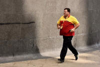

Teaching tense and aspect

If you have it in mind to teach a particular tense, there are guides to most of them on this site. The links are from the initial plus index (new tab).
 |
Other languages |
If you have learned another language, you will be aware that this is
an area in which languages differ quite dramatically in how they
conceptualise time.
There is something of a debate concerning whether the ways in which our
first languages chop up and conceptualise time affect the way we think
about time or whether the way we conceptualise time determines how our
language develops its tense system. The jury is still out on this.
All languages have a way of dealing with past, present and future
concepts. There the similarities end, unfortunately.
In general terms, inflecting languages such as the European Romance
languages like French, Italian and Spanish, as well as Greek, will typically
denote tense markers by amending the verb in some way, often by using different suffixes
or prefixes, sometimes by inserting a particle to signal futurity.
Other European languages, notably Germanic ones, may also insert
various auxiliary verbs. English operates similarly with the
exception of not having a specific form to denote the future. So
we get, for example:
| English | I see | she lived | I will finish | I was living |
| French | je vois | elle a vécu | je finirai | je vivais |
| German | ich sehe | sie lebte | ich werde beenden | ich lebte |
| Spanish | veo | ella vivió | terminaré | estaba viviendo |
| Your language | ? | ? | ? | ? |
Notice that she lived and I was living are not, for
example, distinguished by the verb form at all in German and the same
applies to Dutch and a range of other Germanic languages.
The difficulty will probably become apparent when you insert any
other language you know or speak in the last row. Even in that
simple table, there are obvious issues:
- Aspect:
I was living
is a progressive or continuous aspect form and implies, usually, that this was a long-term state in something like
I was living in France when I met her
This is also sometimes called the durative aspect. Note, however, that German uses the same form for both I lived and I was living, relying on context to determine the nature of the state. There is no marker for the progressive in standard German (although there are dialects which do have the form).
French, arguably, does not really have a present progressive aspect either, often preferring to use a phrase to mean something like to be in the middle of doing (en train de). The imperfect ending on the verb, ais, above, does, however, carry some sense of duration or an interruptible event.
The perfect aspect
I have lived
for example, will also be problematic because German and English exhibit parallel forms but in German the concept is not parallel at all.
Ich habe gesehen
and
Ich sah
are functionally the same tense and mean either
I saw
or
I have seen
depending on the context and meaning intended.
The French
j'ai parle
is also just as easily rendered in English as
I spoke
or
I have spoken. - Auxiliary verbs:
English uses an auxiliary to denote the future but can, and frequently does, just use a present tense with a future time marker such as tomorrow as in, e.g.:
He leaves next week
In fact, nearly all languages do that.
 |
Aspect across languages |
Here's an incomplete list and you should be aware that there is considerable variation within language groups and you can expect some blurring of the categories.
| Perfect aspect | Progressive aspect | Issues | |
| English | uses an auxiliary (have) and it carries a variety of meanings nearly always relating times (past to present, pre-past to past, future to post-future etc.) | uses the tense of the verb be
plus an -ing ending. The continuous aspect may be marked (as in He is living in London or I am enjoying the music) or not (as in He lives in London or I enjoy music) |
There is a variety of uses and the use of aspects is common. The distinction between stative uses of verbs and dynamic uses causes problems |
| Chinese languages | a particle exists in these languages to mark a change in a situation, something like a perfect aspect | two particles exist,
distinguishing (in Cantonese) between progressive (an action in
progress) and continuous (a state in existence) Chinese languages also have what is known as a delimitive aspect which implies that something is of short duration. There is no equivalent in English Chinese languages also have an experiential aspect similar to the English perfect when used to refer to experience |
There are few conceptual problems but form is consistently difficult to grasp as Chinese languages do not have tense forms of verbs at all. Aspect is often marked. |
| Romance languages | have no conceptual distinction between simple
and perfect aspects. There is, however, usually a distinction between perfective (completed actions viewed in their entirety) and imperfective events (to which no time is attached) |
use a variety of verbs (such as stay)
in much the same way English uses be in the past, the progressive and simple aspects are often interchangeable |
Expect: present tense used for present perfect (I live here since ...) mistakes such as I drove when it started to rain |
| Japanese | has no real conceptual distinction between simple and perfect aspects | like some Chinese languages, there is a distinction between a progressive action and a continuous state | There are few conceptual problems but form is consistently difficult to grasp |
| Germanic languages | have no conceptual distinction between simple
and perfect aspects although a look-alike form exists the perfect may be formed with either be or have |
the progressive aspect can be rendered in dialect forms and by the use of various other verbs | The sense of
the perfect in
English is hard to grasp The progressive is not conceptually problematic but learners often ignore the need for a progressive form It is arguable that many Germanic languages do not exhibit aspect at all |
| Arabic | has no conceptual distinction between simple and perfect aspects | a past progressive exists with be but is formed without changing the stem of the main verb | Expect: she saw for she has seen she was talk him |
| Scandinavian languages (excluding Finnish) | have no real conceptual distinction between
simple and perfect aspects the perfect may be formed with either be or have |
no progressive or continuous forms | Expect: she saw for she has seen The simple forms to be overused (She lived in London when she met him) |
| Slavic languages | in some, the past simple is formed with
an auxiliary Polish and Russian form a perfect aspect by prefixes |
in Russian, verbs of motion have a progressive aspect; other verbs to do not | Expect: she saw for she has seen and vice versa The simple forms to be overused (She lived in London when she met him) |
This is not the end of the story. Other languages may signal aspects which are not signalled by verb changes in English such as:
- Continuative
- signalling an ongoing but persistent action. English uses adverbials with
the progressive form to show this aspect as in, e.g.:
He is still asking questions
He isn't here yet - Defective
- signalling an action or event that was not successful or did not
actually occur.
English signals this with adverbials as in, e.g.:
She almost lost her temper
He nearly got the answer right
or with the future-in-the-past formulation as in, e.g.:
I was going to telephone you
I was on the point of going out - Discontinuous
- signalling that an action was completed but the state is also
terminated. For example, in this aspect, in some languages:
I put on my coat
implies that I am no longer wearing my coat.
English has no way to signal this aspect by changes to the verb form. The language is forced to insert a new clause as in, e.g.:
... and then took it off - Episodic
- signalling a one-off event rather than iterative or gnomic
aspects as in, e.g.
The bottle broke
English uses the past simple form for this. - Gnomic
- signalling an established fact, for example:
A square has four sides
English uses the present simple to express this aspect or modal auxiliary verbs such as must, can, have to, as in e.g.:
Parallel lines cannot meet - Inceptive
- signalling the beginning of something.
English signals this aspect semantically by verb choice, often with the to-infinitive, as in, e.g.:
It started to rain
I began to wonder - Pausative
- signalling an interrupted action which then continued.
English uses adverbials or non-finite forms to show this aspect as
in, e.g.:
She stopped to look in the window
He gave up smoking for a long time - Resumptive
- signalling an action or event that resumes.
English often signals this semantically by the choice of verb, which may be followed by a non-finite -ing form, or a noun phrase as in, e.g.:
I carried on walking
She resumed eating
He continued his speech - Terminative
- signalling the end of an action or event.
English signals the aspect semantically by verb choice, often with an -ing form, as in, e.g.:
It stopped raining
I finished working
Aspect in English |
The usual analysis in most grammars for learners and course materials is to consider only three aspects in English. These are:
- simple

- Most languages have this aspect, of course, because it is,
as the name implies, simple.
It is realised in English by the verb form without primary auxiliary verbs.
It function is to state a fact about the past, present or future or one which is always true and, therefore, timeless.
For example:
It rained
I like coffee
Tomorrow is my birthday
I will be 23
The flight takes off at 15:00
etc. - perfect
- Many languages do not have an equivalent to this aspect (see
above) and it causes difficulty.
In English the aspect is signalled through the use of the primary auxiliary verb have and / or adverbial use.
Its function is to embed one state or event in another and signal the relevance (often causal) of one to the other. It may also signal chronological ordering.
For example:
Mary has arrived so we can start the meeting
I had lost my money and had to walk home
She will have finished so and then we can go
I already told you so you should know
I explained that yesterday so everyone is up to speed
etc. - progressive
 - This is also absent from many languages and causes an equal
amount of difficulty. This is not helped by the aspect
being conflated with continuous in many materials and teaching
manuals.
It is realised in English by the use of the primary auxiliary verb be and / or the use of various adverbials.
Its function is to signal that an event or state is on going and unfinished. It is, therefore, akin to the imperfect in other languages.
For example:
We were playing tennis when it began to rain
I'll be walking to work this week
Are you having problems?
I'm enjoying this music
etc.
And that is where the analysis as far as English is concerned
usually stops because English does not have a way of signalling
other aspects individually. Once we have exhausted the
possibilities of using the bare form of the verb and the two primary
auxiliary verbs, be and have, most people stop
there. However, for the purposes of teaching aspect and tense,
we need to be a little more precise because, as we saw above, our
learners' languages may have ways of signalling other aspects by
changes to the verb forms unique to that aspect. They will be
concerned to able to express thoughts in English with similar
clarity and precision.
Because all languages are capable of expressing all human thought,
you will not be surprised to discover that English can signal other
aspects but does so by re-purposing the verb forms.
On this site, therefore, we also consider:
- continuous

- This is expressed in two main ways in English and also by
the use of various adverbials. With dynamic verb use, the
preferred realisation is through the use of the primary
auxiliary be and that is why it is often conflated with
the progressive. However, with stative verb uses, the
preferred realisation is simply to use the base form of the verb
without auxiliaries or to signal the continuous nature of an
event or state by temporal adverbial expressions.
Its function is to signal that an event may not be happening now (so is not progressive) but is occurring in the background. The other function is simply to signal an existing state of affairs (called the stative continuous aspect, incidentally).
The form also signals what is sometimes called the gnomic aspect (see above) referring to general truths.
For example:
I enjoy classical music
Sharks are dangerous
She speaks Italian well
She is being difficult
The car is getting old
I had a terrible cold
I'll be staying at the Ritz
She was not helping
It was becoming cold
He used to be so nice
She's studying at university
They go to university in America
etc. - durative

- Some languages (see above) have a dedicated tense form for
this aspect but English relies on the primary auxiliary verb
be, durative verbs or on adverbial use to signal the aspect.
Its function is to draw attention to the fact that a state endures for some time – hence its name. It is also sometimes referred to as continuative.
For example:
The rain kept pouring down
She would be consistently irritated by it all
They grew old together
She is still working on the problem
I haven't finished writing yet
She stayed for quite a while
etc.
As we saw in the introduction to the analysis in this area, English has both punctual and durative verbs. In the former cases, the verb form has to be amended to signal a durative aspect or the sense will be of a simple action. For example, if we say:
We opened the door
the sense is of a simple, short, finished action and to give it a durative sense we have to use a progressive form as in:
We were opening the door
However, with verbs which are themselves durative in meaning, that is not necessary so we can happily say:
She lived in Paris
and know that this is not, cannot be, anything other than a long-lasting, durative situation.
We can say:
She was living in Paris
but we certainly don't have to and when we choose that form, we strongly imply a temporary condition. - iterative
- This is expressed in English by using the primary auxiliary
verb be (sometimes combined with the perfect-signalling
have) and / or using adverbials to signal
the repeated nature of an event or action.
Its function is to signal that a momentary or progressive verb or a state is repeated.
For example:
I called the number time and again before I got through
Someone has been stealing my vegetables from the garden
I will have been taking this medicine for three years soon
It had been raining on and off all day
They are ringing the bells
Diplomats will be meeting for more discussions next month
etc.
To understand the difference between the continuous, durative and iterative aspects, it is helpful to consider two adverbs: continual vs. continuous.
The first of these signals an iterative event as in, e.g.:
The car makes a continual clanking noise but it comes and goes
The second signals a continuous or durative aspect as in:
The car is making a continuous grinding noise and something's seriously wrong - prospective
- English, of course, uses the modal auxiliary verb will
for the future reference function but it has, notoriously, a
number of other ways to signal a prospective event or state from
the point of view of the past, the present or the future.
The function of the aspect is to signal that an event or state is forthcoming based on other states or events or current knowledge of what happens as a matter of course. The forms which refer to an unfulfilled prospective event (e.g., the first one below) are signalling what is sometimes referred to as the defective aspect.
For example:
She was going to call on her mother
He's going to be furious
Don't call now. They'll be having lunch.
Can't stop now. I'm about to get on my train.
I mean to talk to him about that
We're taking a holiday shortly
I didn't intend to upset him
What are we going to do if it rains?
etc. - habitual

- English is unusual in reserving a semi-modal auxiliary verb
and using a central modal auxiliary verb for this function but
it can also use adverbials and base forms of the verb for the
same effect.
The function is to signal that something is or was habitually done or the case.
For example:
We used to live over there
She would take the dog for really long walks
I studied there for two years
She went to school in Margate
She takes the train to work
etc.
 |
So what? |
So quite a lot.
What often confuses learners is the attempt to teach a tense form
with exemplifications of different aspects at the same time.
We have seen, for example, that the progressive, the durative and
the iterative aspects can all be realised through the use of the
primary auxiliary verb be in one of its forms
However, if the examples given of the use carelessly mix up the
three aspects, learners may be frustrated and confused and that's
not their fault. For example:
She was playing tennis
He was ringing the bell
She was still sleeping
are all superficially the same tense form but the three sentences
signal progressive, iterative and durative events, respectively.
To present them together is simply asking for trouble.
On the other hand, starting with the aspect we want to enable our
learners to express and giving them a range of ways of doing it does
make sense so we can present:
I took the bus to school when I was a child
I used to take the bus to school when I was a child
I would take the bus to school when I was a child
are all alternative ways to signal the habitual aspect in English
and presenting them together will not confuse learners unduly
because the concept is not shifting before their eyes.
There's a little more on this below.
If you have followed the general guide to aspect in this part of the site, this diagram will be familiar. It's a good place to start if you have been convinced that teaching the aspect first and the tense forms second is a better way to proceed than teaching tenses and then getting learners to understand which aspects they may encode.

 |
Avoidance |
English tense forms and their concepts are difficult to grasp but the
verb itself has few inflexions.
Learning the forms of be and have and the single
change between the infinitive and past participle, along with the -ing
ending makes it simple to form lots of tenses. Expect some
avoidance, therefore, and the use of the perfect and progressive aspects
where the simple aspect is desirable. It is easier to form, for
example:
I was choosing
than to remember the past-tense of the verb and form
I chose
Learners whose first languages make changes internally or to the
endings of verbs to signal aspect (such as most Romance languages and
many others) will often be bewildered by the number of auxiliary
forms available to English speakers and simply avoid using them,
preferring to substitute rather clumsy adverbial formulations.
We may get then, e.g.:
She bangs on the door for a long time
instead of the form to signal an iterative aspect such as
She has been banging on the door for a while
This is made worse by the fact that the verb be in
English is used to signal both a progressive or continuous action or
event and the passive voice. The meaning, therefore, of the
auxiliaries in something like:
The car is being serviced
or
The garden will be being attended to
may be lost.
Forming such structures is even more challenging.
Learners may often, in these cases, avoid the complication of the
passive or the progressive forms and produce either:
I'm servicing the car
or
The garden will be attended to.
 |
Concepts |
There are three main issues:
- Many languages have similar forms to English (especially the perfect aspect forms) but use them in significantly different ways and often don't distinguish one form from another conceptually
- Many languages, while having a conceptual difference similar to English, will form the aspects in radically different ways (and some make distinctions between aspects that simply do not exists in English)
- English aspect forms are used for a variety of functions (consider, e.g., the uses of the present perfect)
What implications do you see arising from these three issues? Click on the diagram when you have an answer.

Some languages, of course, will present double problems, using a similar form with a different concept and having similar concepts realised in different forms. We need to take care.
 |
Some ideas |
As you can see, concept needs to be made clear from the outset and that usually means setting the language in a context which makes the meaning and the intention of the speaker explicit.
 |
Meaning and intention |
Time lines
are invaluable to help people grasp the concept of time realised by the target tense form. Consider the following and ask yourself whether the explanation is clear. Then hover on the explanation to see the picture:
| Explanation | Time line (hover over the explanation to see it) | Example |
| This tense is used in English to make it clear that one event occurred many times in the past but is not still happening |
 |
John cycled to school when he was a boy. |
| These two tenses are used when a long event is stopped by a short event |
 |
He was skiing when he broke his leg. |
| This tense is used when we want to look back from the future to an event occurring before the future |
 |
The town will have changed a lot by the end of the decade. |
Concept-check questions
are equally necessary to allow you and the learner to see if the concept has been grasped. For example, what questions would you use to check the following tense meanings are understood?
Think what questions you would ask and then hover over the example sentences when you want to see suggestions. (There's a guide to checking learning and understanding on this site, linked below.)
|
A: You've been to New York, haven't you? B: Yes, I have. Why do you ask? |
Is speaker A interested in when B went to New York? Why is speaker A asking the question? Are they going to talk about New York or when A went to New York? |
|
1. I was cycling home when I saw Mary. 2. Mary was cycling home when she was arrested by a police officer. |
Is cycling home a quick action? Did I continue to cycle home after seeing Mary? Did Mary go home after the police officer stopped her? |
| Will you have repaired the car by Tuesday? |
Is the question about Tuesday or the
car? Is it possible the car will be ready on Monday? What day does the speaker need the car? |
 |
Context |
When you plan a lesson on any particular tense form, time is well spent thinking about a clear context in which to set the language. For example:
| Present perfect for life experiences up to now | Exotic foods (I've never eaten
etc.) Cultural event (I've seen ..., I've visited the British Museum etc.) Conversational gambits (You've been to ..., haven't you? etc.) |
| Past perfect | Sequences of events in which
subsequent ones depend on early ones: Absent-minded people (He had to go back because he'd forgotten ... etc.) |
| going to prospective aspect based on present evidence | Forecasting weather from sky pictures Pictures of unstable events: volcanoes, inattentive drivers, children playing ball games near windows etc. |
 |
Practice |
Practice also has to be in a context and have meaning for the learners or it's just form manipulation. This is particularly important if the learners' first language has a similar form used differently. For example:
| Present perfect (life experiences up to now) | Learners make lists of things they have never done, have
done, have done only once/twice etc.
They then mingle with other students to see if their lists
overlap or not, asking and answering questions in the form. You can extend this activity to make sure that people ask where? when? etc. in order to be definite and, accordingly, select the past simple. |
| will to show willingness | Learners role-play a willing person
and a demanding person: A: There's no air in here. B: I'll open a window. A: I haven't got a pen. B: I'll get you one. etc. |
| Present perfect as a conversational gambit | Learners decide on pieces of
information they need to know about something and then find
out who can tell them by asking things
like You've been to France, haven't you? Well, I've
been wondering ... Learners invent gossipy stories about each other / teachers etc. and then pass them on to a colleague who in turn embellishes the snippet of scandal and passes it on again. E.g., Did you know that John has moved in with Mary? Yes, and she has decided he can't stay much longer. |
| Future perfect for changes by a time | Learners make predictions about how they, their home town, their countries, the world will have changed by (date). |
 |
Teaching back to front |
A structural approach to teaching English focuses on the form and then considers its meaning.
For example, we teach the form subject + be +
-ing (They are talking) and then consider what
it might mean (future arrangement, current event etc.)
A communicative / functional approach may reverse this and focus on the function to be expressed and see what ways the language has to express it. For example, we might start by focusing on making very polite requests and then teach a range of grammatical realisations such as
Would you mind awfully ...
Can I ask you to ...
Is it too much trouble to ...
I wonder if ...
etc.
It is often the case, however, that we don't do this with aspect. Aspect is
usually taught structurally as something secondary to the form of the verb:
That's a present perfect. What does it tell us about the speaker's view of the event?
We can, however, focus on the aspect and look at the various ways English has of signalling it because it, too, has a functional, communicative role. Two examples:
- How can English signal that an action is iterative (i.e., repeated)?
- How can English signal that an action is prospective (i.e., imminent)?
Click here when you have some answers.
| Iterative | She went on and on asking. They did it continually / repeatedly. I said it again and again. He banged the drum for hours. I mow the lawn every Friday. I used to get up late on Sundays. We would take long walks in the country every week etc. |
| Prospective | It's going to rain. She's about to get very angry. He's on the verge of applying. We're nearly at the point where ... I'll be with you presently. (British English) I was on the point of when ... etc. |
You may have thought of others.
An approach like this which identifies a communicative function
and then focuses on the language to achieve it, is perfectly
legitimate in ELT and may be very fruitful as well as helpful
for learners whose first-language backgrounds lead them to focus more explicitly on aspects not often identified as core aspects in English.
| Related guides | |
| tense and aspect | for the introduction and index to the area which considers the core concepts |
| aspect | for the guide to the background theory of aspect only |
| tenses index | the index in the initial-plus section for tenses and verb forms |
| checking learning | for the guide mentioned above concerning, inter alia, concept checking questions |
References:
Campbell, GL, 1995, Concise Compendium of the World's Languages,
London: Routledge
Swan, M and Smith, B (Eds.), 2001, Learner English, 2nd Edition,
Cambridge: Cambridge University Press